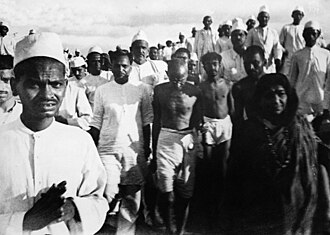
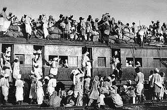

Part III · Revolutions · Chapter 8
Inherits: Versailles (ch. 6) · Feeds: The 1945–49 order (ch. 14) · Next: rewind to 1929, when the world price system breaks
India 1930–1947
On the morning of 6 April 1930, at Dandi on the Gujarat coast, a sixty-year-old lawyer walks into the shallows and lifts a lump of natural salt out of the mud. He set out twenty-four days earlier with seventy-eight others; the road behind him is now full. Picking up that salt is a criminal offence, because in British India salt may be produced and sold by one party only. The road stays full, on and off, for seventeen more years. Then British rule ends — and in most of the textbooks in this chapter, the sentence that ends it has Britain as its subject and the road as its background.

Who ends the British Empire in India — and what verb does that sentence need?
1 The boring facts
These lines start eleven years before the chapter’s title does, because the first thing these books have to decide about India is who is holding the rifles in a walled garden in 1919.
- March 1919: the Rowlatt Act extends wartime detention powers into peacetime. Protest spreads. On 13 April 1919, in the walled garden at Jallianwala Bagh in Amritsar, troops under Brigadier-General Reginald Dyer fire on a penned crowd for about ten minutes.
- The death toll was disputed from the start. The British Hunter Committee (1920) recorded 379 killed; an Indian National Congress inquiry put the figure at about a thousand. Both numbers are still in circulation.
- 12 March – 6 April 1930: the Salt March, roughly 240 miles from Sabarmati to Dandi, opens a civil-disobedience campaign in which tens of thousands are arrested. Reform Acts follow the pattern of 1909, 1919 and 1935: wider franchise, more Indian office-holders, no transfer of sovereignty.
- 1937: under the 1935 Act, Congress wins majorities in eight of eleven provinces. August 1942: the Quit India resolution; Gandhi, Nehru and most of the Congress leadership are jailed for the remainder of the war. 1943: famine in Bengal.
- 16 August 1946: “Direct Action Day” and the Calcutta killings. March 1947: Mountbatten arrives as viceroy. The Indian Independence Act receives royal assent on 18 July 1947.
- 15 August 1947: British rule ends and two states exist where one colony had been — India and Pakistan. The Radcliffe boundary award, dividing Punjab and Bengal, is published on 17 August, two days after the border it describes came into force.
- Scholarly estimates of the partition dead range from roughly 200,000 to around two million; refugee movement is usually put between ten and twenty million. No figure is settled.
- 30 January 1948: Gandhi is shot dead in Delhi by Nathuram Godse. Kashmir is fought over in 1947–48 and remains divided.
2 Not a gift
The flattest denial that independence was a British gift is printed in a British school textbook. Norman Lowe’s Mastering Modern World History sets out the official account first — Bevin and Attlee “therefore decided to give India full independence, allowing the Indians to work out the details for themselves” — and then hands the page to the other side. “Some Indian historians, including Sumit Sarkar and Anita Inder Singh, have challenged this view, arguing that Indian independence was never a long-term goal of the British… Independence was not a gift from the British, it was ‘the hard-won fruit of struggle and sacrifice’.” A market textbook in the country that ran the Raj puts that sentence on the page, in quotation marks, for a fifteen-year-old.
Now go looking in the same book for the struggle. Amritsar is not in Lowe’s text and not in his index. Neither is Rowlatt, nor the Salt March, nor Quit India, nor any campaign of civil disobedience in India at all — the only two uses of that phrase in the book belong to the Palestinian intifada and to an election dispute elsewhere. His India opens with the Morley–Minto reforms of 1909 and reaches 1945 through three Acts of Parliament that “all gave the Indians more say in the government of their country.” M. K. Gandhi enters on page 535, as a Congress leader who “believed in non-violence” and was still hoping for a united India in 1947; his index entry is two pages long.
So the hard-won fruit is on the page and the struggle is not. What Lowe gives the student is a chronology of concessions with nothing in it to concede to: three Acts, a war, a decision in London, and a quotation from Indian historians insisting that none of that is the reason. That contradiction — a book arguing about who won independence without narrating anybody winning it — is the sharpest version of something the whole ladder is doing. The other six do it in one verb each.
Every classroom whose syllabus reaches India tells this story; nobody is dodging it. The rows below run from independence as a condition with nobody in it, through independence as a transfer out of British hands, to independence as something taken. Britain sits last because its section holds both ends of that scale at once.
| Classroom | How British rule ends | One-line tag |
|---|---|---|
| IN · NCERT 2022+ |
“Quit India Movement (1942); India and Pakistan become independent (1947)” Themes in World History, Class XI · Timeline IV, “South Asia” column, p. 132 |
Independent, intransitively |
| BY · Кошелев 2021 |
«В 1947 г. обрели независимость Индия и Пакистан.» “In 1947 India and Pakistan attained independence.” |
Attained — 74 pages after the struggle |
| RU · Чубарьян 2023 |
«В 1947 г. Великобритания приняла решение предоставить Индии независимость. Но при этом по религиозному признаку страна была разделена на два государства — Индию и Пакистан.» “In 1947 Great Britain took the decision to grant India independence. But at the same time, along religious lines, the country was divided into two states — India and Pakistan.” |
A decision, and a bequest |
| UA · Гісем–Мартинюк 2019 |
«У серпні 1947 р. колоніальна адміністрація заявила про надання Індії незалежності, але в той самий час країна була поділена на дві держави — Індійський союз і Пакистан, які отримали статус домініонів.» “In August 1947 the colonial administration announced the granting of independence to India, but at the same time the country was divided into two states — the Indian Union and Pakistan, which received the status of dominions.” |
The administration announces |
| US · OpenStax 2022 |
“In 1947, the United Kingdom granted India its independence. Anti-British protests had rocked India throughout 1946, and, exhausted from fighting World War II, Britain could no longer afford to maintain control over its colony.” |
Granted — and here is why |
| IT · Sabbatucci–Vidotto 2004 |
«…il Partito del congresso – guidato, dal ’41, da Javaharlal Nehru, uno dei più stretti collaboratori di Gandhi – promosse un movimento di resistenza non violenta alla guerra, strappando agli inglesi la promessa di concedere all’India lo status di dominion, che equivaleva a una indipendenza di fatto.» “…the Congress Party — led, from ’41, by Javaharlal Nehru, one of Gandhi’s closest collaborators — promoted a movement of non-violent resistance to the war, wresting from the English the promise to grant India the status of dominion, which amounted to independence in fact.” Il mondo contemporaneo, Laterza 2004 · §23.2 “The emancipation of Asia,” p. 529 |
Wrested from the English |
| UK · Lowe 2013 |
“Bevin and Clement Attlee, the prime minister, therefore decided to give India full independence, allowing the Indians to work out the details for themselves.” |
The gift, and the historians who deny it |
Four narrators put Britain in the subject position: granted (US), took the decision to grant (RU), decided to give (UK), announced the granting (UA). Two remove the second party altogether — Belarus writes independence as something India and Pakistan “attained,” India’s own book as something they “become.” One reverses the direction of travel: Sabbatucci–Vidotto have the Congress Party strappando agli inglesi, wresting the promise out of English hands. The date and the outcome are identical in every one of them. What changes is which end of the transaction the verb is anchored to.
Russia goes furthest along the donor axis and then adds a legacy clause. «Англия, покинув Индию, оставила ей демократию» — England, having left India, left it democracy — is the only sentence in these classrooms that credits an empire with the political system its former colony kept. It arrives three lines after the partition, in the same paragraph that has divided the country “along religious lines,” and it is the last word on India in the book. Chubaryan’s India section is otherwise the most attentive to method of any Russian passage on a colonial subject: it dates the Rowlatt Act, names the two phases of civil resistance, gives Congress ten million members and 150,000 volunteers, and records that during the second campaign the authorities “did not dare to arrange a bloody slaughter again” because “the soldiers this time refused to shoot.” Then it hands the outcome back to London.
The verb is the first test. Two more follow: who gets named when colonial force is used, and who gets blamed when the colony splits.
Amritsar rearranges the ladder completely. Chubaryan is the most agentive narrator of the killing in the whole set: «Расстрел английскими властями мирного митинга 13 апреля 1919 г. в Амритсаре» — the shooting by the English authorities of a peaceful rally on 13 April 1919 in Amritsar — followed by «эта кровавая бойня», this bloody slaughter. Sabbatucci–Vidotto give the episode a section heading of its own, “Il massacro di Amritsar,” and a consequence: after it “the abyss between colonisers and colonised became unbridgeable.” OpenStax names the unit that fired — “the British Indian Army opened fire on the protestors, who had little chance of escape from the closed-in space” — calls the event a massacre in the next sentence, and sets it as a multiple-choice question at the end of the chapter. Belarus keeps the act and drops every coordinate: even in cases when English troops opened fire on demonstrators or rally participants, Gandhi insisted on observing the principle of nonviolence. No place, no date, no number; the sentence’s destination is Gandhi’s discipline, and the shooting is the subordinate clause it travels through. The three that give a number have quietly inherited different ones — the British committee’s in one, the Congress inquiry’s in another — and none tells the student that a side is being taken. Lowe, the narrator whose state fired, has no sentence here at all.

Partition inverts the ladder again. The books that made Britain the giver mostly print no death toll at all: Russia none, OpenStax none, Belarus none, NCERT none. Ukraine gives “about 100 thousand” dead in the resettlement clashes. Sabbatucci–Vidotto close the story with a sentence built to hurt — the epic of a national liberation movement that had asserted itself by peaceful means thus concluded with over 100,000 dead and with the transfer from one state to the other of 17 million people. The highest numbers on this ladder are British: 5,000 killed in Calcutta, and “about 250 000 people were murdered” in the Punjab. The imperial narrator counts the most dead — and then prints its own prime minister’s answer for them. Attlee argued “with some justification,” Lowe writes, that Britain could not be blamed for the violence; this was due “to the failure of the Indians to agree among themselves.” Lowe also prints A. N. Wilson on Mountbatten’s “superficial haste, his sheer arrogance and his inattention to vital detail,” and V. P. Menon on the goodwill Britain earned. It is a balance sheet of historians, laid over a country in which, in this book, nothing has happened since 1909.
“So we need to read each timeline critically, see what it tells us and what it does not. Timelines frame history in particular ways.”
IN · NCERT, Themes in World History, Class XI · “On Reading World History,” p. viii — 124 pages before the timeline in questionWhich leaves the Indian column, and it is not a column. On page viii, before the student reaches anything, NCERT’s chief advisor writes: “This year you are not reading about the history of South Asia. The book you read next year will be on ‘Themes in Indian History’.” That is a syllabus boundary, declared in the front matter, and it is why the South Asia column of Timeline IV carries the whole independence movement in two cells — Non-Cooperation in 1921, and the line quoted on the ladder above. Gandhi’s other appearance in this timeline is not in the South Asia column at all; it is under AFRICA, on the previous page: “Mahatma Gandhi advocates satyagraha to resist racist laws (1906).” Jawaharlal Nehru’s name occurs in the book only as the name of a university in the contributors’ list. On this event the self-pole narrator is a vacancy — announced in advance, by a book that has already handed the student the tool for detecting vacancies.
3 The thread
A nine-year-old at a school in Santiniketan, a hundred miles north of Calcutta, spent the autumn of 1943 watching people walk in from the villages of Bengal to die. Nothing visible explained it. The rice harvest had not collapsed, no army had cut the province off, and rice was on sale a district or two away at prices the arrivals could not pay. Amartya Sen spent his working life on that gap, and the answer he arrived at is now the standard way any food crisis is read.
Here is the machine, and it is from general history, not from any book above. Japan takes Rangoon in March 1942 and then Burma — the world’s largest rice exporter, and the source of a modest but decisive share of what eastern India ate. With the Japanese now at Bengal’s frontier, the colonial administration applies a denial policy to the coastal districts: country boats are confiscated or destroyed by the tens of thousands, and rice stocks above a household allowance are removed, so that an invader would find neither transport nor food. Those boats were also how Bengali fishermen fished and how rice moved between districts. At the same time the war has its own queue — Calcutta’s industries, the army and the theatres outside India are provisioned first, grain prices are left to the market, and shipping is allocated elsewhere. Prices go up several times over and stay up. Refugees arrive from Burma; a cyclone hits the delta in October 1942. What kills is none of these singly: it is that a labourer, a fisherman or a barber holding money in a rising market can no longer buy rice that physically exists a district away. Between two and three million people die, most of them in 1943, most of them not of hunger alone but of what follows hunger. It was not a harvest failure, and it was not a planned massacre. It was a priority hierarchy operating as designed.
Two classrooms put the year 1943 on the page with a famine attached to it, and they do not tell the same story. OpenStax gives it a paragraph inside the war chapter, between the jailing of the Congress leadership and the arrival of Subhas Chandra Bose: “A devastating famine in Bengal reached a peak in 1943. It was caused by the dispatch of Indian food supplies to support the war effort in Europe, natural disasters toward the end of 1942, an influx of refugees fleeing the Japanese offensives in Burma, and general governmental mismanagement. The famine added fuel to the Indian desire for independence.” (p. 544.) Lowe gives it three lines, twenty-odd pages past his India section and inside a different argument — §24.7, “Verdict on decolonization,” where he weighs whether the empire was worth having. He quotes Piers Brendon that “the history of India is punctuated by famines which caused tens of millions of deaths,” and then: “During a severe famine in Bengal in 1942–3, Churchill refused to divert shipping to take food supplies to Calcutta. The result – over 3 million people died from starvation.” (p. 560.) Four causes and no name; one name and no causes. Neither puts the event in the same chapter as the movement it belongs to.
Nobody else puts the famine on the page. The Indian silence is the one worth pausing on, and it is a boundary rather than a flinch: the same rationalised edition does count famine dead when they fall inside its own frame — “Famine in the Deccan, southern India (1876-78), over 5 million die,” in the SOUTH ASIA column, p. 131 — and counts industrial dead once more, at Bhopal in 1984.
The vocabulary descends from the same event. Sen’s answer to what he watched — that famines are failures of entitlement, of what a person can command, rather than of what exists — took the Nobel in economics in 1998, and it is why governments now keep their food position the way a treasury keeps reserves: months of consumption in store, a procurement price, an export ban when the number falls. They exist so that what happened in Bengal in 1943 shows up on a ledger before it shows up in a death rate. The prices that did the killing were wartime prices in a world market — and the next chapter goes back fourteen years to watch that market break.
Rationing reached Calcutta in 1943 and never left. If you grew up in India, the ration card in the kitchen drawer and the fair-price shop it is spent in are the working remains of that wartime apparatus: the Public Distribution System issues entitlements to several hundred million people, out of buffer stocks, at a fixed price. Everywhere else the same machinery sits one step back, in the price on the bag: when India stopped most of its rice exports in July 2023, the world rice price hit a fifteen-year high, and importing shelves followed.
4 Credit where due
Fairness
NCERT (IN) is the book with the least India in it, and the only one that hands the reader the instrument for noticing. Its independence pages are close to empty, and it says so on page viii before anyone reaches them, in an essay on selection that cites E. H. Carr, warns that “history writing cannot do away with this element of selectivity,” and tells the student to read timelines for what they leave out. A blank that announces its own boundary in advance is a different object from a blank. Of the eleven books in this corpus it is the one that treats its own frame as evidence — which is the move this whole chapter has been making about everybody else.
5 Where this stops being true
Limits
Coverage on this topic is 7 of 7 in-scope books, so no zero in this chapter is an avoidance signal, including the famine zeros. China’s volume is a national history with no reason to narrate Indian independence, Germany’s is a National Socialism booklet, Sudan’s secondary syllabus runs 1821–1953 in its own region, and Kazakhstan’s is a national history that is never a peer column here. A syllabus boundary is a boundary; reading it as a silence would be the same error this chapter is charging other people with.
None of these seven is a history of India, and the gap shows most where it matters most. The single largest human fact in the period — how many people died in the partition — has no agreed number in any of them, and four of the seven give none at all. Nobody on this ladder names Cyril Radcliffe or his boundary commission; the lines drawn in five weeks by a man who had never been east of Suez are, in these classrooms, lines that appeared.
6 Receipts
- UK — Norman Lowe, Mastering Modern World History, 5th ed. (Palgrave Macmillan 2013), §24.2 “Indian independence and partition,” pp. 534–7 (index: India 534–7). Sarkar / Inder Singh debate p. 534; Jinnah and “Pakistan or Perish” p. 535; Calcutta 5,000 p. 536; Punjab 250,000 and Attlee’s defence p. 537; Bengal famine, Brendon and Churchill, §24.7 “Verdict on decolonization,” p. 560. 0 mentions Amritsar · Jallianwala · Rowlatt · Salt March · Quit India — no text hits and no index entries.
- US — OpenStax, World History, Volume 2: from 1400 (2022). Amritsar and the Rowlatt Act p. 504 (index: Amritsar 504); Salt March p. 504 and sixty thousand arrests p. 505; Quit India and the arrests p. 543; Bengal famine and the INA p. 544; independence and partition p. 592; Kashmir box p. 593; Amritsar as assessment question 16, p. 520. OpenStax is also the only classroom of the eleven in which a reader learns how the movement worked — the salt monopoly, the 240-mile walk, the arrests, the naval mutiny of 1946 — and the only one to volunteer that the United States pressured Britain to let India go.
- IT — G. Sabbatucci & V. Vidotto, Il mondo contemporaneo (Laterza 2004). §20.4 “L’Impero britannico e l’India,” with the sub-heading “Il massacro di Amritsar,” pp. 453–5, including the “almost 400” dead; independence, 100,000 dead and 17 million transferred, and Gandhi’s killing, pp. 529–30.
- RU — А. О. Чубарьян, Всеобщая история. Новейшая история 1914–1945 гг., 10 кл. (Просвещение 2023). §14–15 “The East in the first half of the XX century. China. India,” pp. 121–4: INC 1885 and Gandhism p. 121; Gandhi biography box p. 122; Amritsar, “over 1 thousand people were killed and about 2 thousand wounded,” and the first campaign p. 123; second campaign, 60,000 arrests, 1935 Act p. 123; 1937 elections, 1946 naval mutiny, independence and partition, and the democracy line p. 124.
- UA — О. Гісем & О. Мартинюк, Всесвітня історія, 11 кл. (2019). §15 “India,” p. 131: INC versus Muslim League, the metropolis’s support, the August 1947 announcement, ~100,000 dead in the population exchange, Gandhi’s hunger strike and killing, and the Kashmir conflict. Attlee and the 1947 dominions p. 51; chronology entry for 15 August 1947 p. 221.
- BY — В. С. Кошелев и др., Всемирная история, 11 кл. (БГУ 2021). INC founding, in the chapter on colonial expansion, p. 71; Gandhi, Gandhism, sarvodaya and satyagraha p. 135; the means of satyagraha and “even in cases when English troops opened fire” p. 136; §29 “The collapse of the colonial system,” independence one-liner p. 210. 0 mentions Amritsar · Salt March · Quit India · Jinnah · partition death toll.
- IN — NCERT, Themes in World History, Class XI (post-2022 rationalised, Reprint 2026-27). “On Reading World History,” pp. vii–viii — selection, E. H. Carr, “read each timeline critically,” and “This year you are not reading about the history of South Asia. The book you read next year will be on ‘Themes in Indian History’.” Timeline IV: Gandhi and satyagraha 1906 in the AFRICA column, p. 130; foundation of the INC 1885 and the Deccan famine of 1876–78, p. 131; Non-Cooperation 1921, Alam Ara (1931) as the South Asia entry for that decade, Quit India 1942, independence 1947, republic 1950, p. 132. 0 mentions Amritsar · Jallianwala · Salt March · Jinnah · Mountbatten · partition · Bengal famine (Nehru appears only in the contributors’ affiliations).
- SD — وزارة التربية والتعليم, التاريخ للصف الثالث (Khartoum 2009). Out of scope as Indian history, but India is inside the Sudanese story twice. Printed p. 90, among the influences on the Sudanese national movement: «أثر المؤتمر الهندي وتمثل في إعجاب المثقفين السودانيين بشخصية (المهاتما غاندي) ومقاومته للاستعمار البريطاني.» — “The impact of the Indian Congress, manifested in the Sudanese intellectuals’ admiration for the personality of (Mahatma Gandhi) and his resistance to British colonialism.” Printed p. 264, Article 7 of the 1953 Anglo-Egyptian agreement, reproduced in full: «وتكون رئاسة اللجنة للعضو الهندي.» — “And the chairmanship of the commission shall belong to the Indian member.”
- 0 in-scope CN (中外历史纲要 上, Chinese national history; stems 甘地 · 尼赫鲁 · 国大党 · 印巴 · 印度独立 · 非暴力 — no hits) · DE (bpb Nr. 316, NS 1939–45; stems Gandhi · Indien · indisch · Nehru · Amritsar · Teilung — no hits) · KZ (national history, not a world-history column; stems Ганди · Индия · Пакистан · Үндістан — no hits)
- The arithmetic behind the famine. In the corpus: two of eleven classrooms put a Bengal famine on the page (UK, US). Stems searched: Bengal · famine in 1943 · голод в Бенгалии · carestia in that year. RU, UA, BY, IT and IN print nothing; the remaining four (CN, DE, KZ, SD) are outside the relevant syllabus, so their zeros carry no weight.
- Method notes. Page numbers here were derived, not copied. Lowe’s extraction carries no printed folios, so his pages come from the book’s own index (“India 534–7,” “Gandhi, M.K. 535–6”), which does not match the extraction’s pagination; the Russian, Belarusian and Ukrainian books foot their folios and the Indian and American books head theirs. Every page above was checked against its book’s contents page and should still be confirmed against a printed edition before being treated as a hard reference. The Sudanese Arabic is reconstructed from a ligature-mangled extraction. And this chapter’s own planning note was wrong: it predicted an Amritsar three-way of British silence, American candour and an Indian self-pole. Lowe’s zero is real and OpenStax does name the army and the enclosure, but the third leg failed — the Indian book has declared India out of scope, and the most agentive Amritsar sentence in the corpus turned out to be Russian.
Now look up what your textbook calls it.